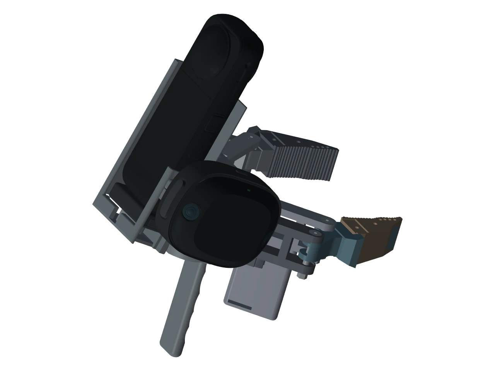

Flexiv Grav GN-01
Original camera and tracker geometry, the gripper linkage, and eight top-entry shoulder screws with flush countersunk heads.
Handheld UMI for two robot grippers
GenUMI uses an Insta360 camera to capture manipulation demonstrations with a handheld gripper. Its two mechanical designs aim to reproduce the geometry and motion of the Flexiv Grav GN-01 and the Robotiq 2F-85, respectively.

Original camera and tracker geometry, the gripper linkage, and eight top-entry shoulder screws with flush countersunk heads.

Original finger links and pads in the reconstructed jaw assembly, with the Insta360 X5 and HTC VIVE Ultimate Tracker fitted to the chassis.
The GenUMI designs use the BSD 3-Clause license. The SolidWorks archives preserve the native designs. The STEP packages include the revised assemblies and separate hardware parts. Third-party reference geometry follows its upstream terms.
The camera display uses the supplied X5 scan calibrated to the published dimensions. The magnetic quick release is shown as a dimensional envelope. Insta360 X5 specifications